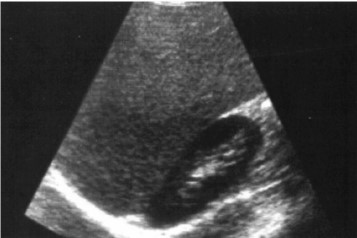
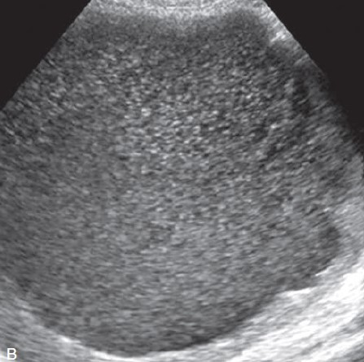
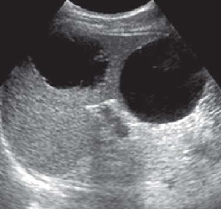
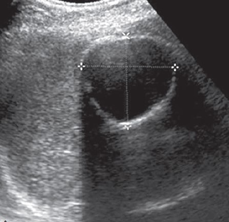
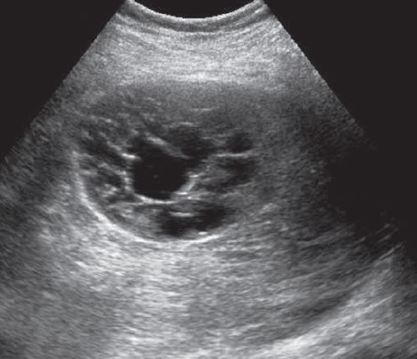

Splenomegaly
Introduction
There are no absolute criteria for the spleen size on ultrasound. When normal, its a little larger than the left kidney. The length should not exceed 15cm in the major axis (from pole to pole)
A chronically enlarged spleen may often distort and displace the left kidney, narrowing it in the antero-posterior diameter and width.
Clinical presentation
Patients with splenomegaly can present with a variety of symptoms and signs, depending on the underlying cause. The clinical presentation can range from asymptomatic (discovered incidentally) to symptomatic with complications such as Hypersplenism or splenic infarction
Common symptoms:
- Left upper quadrant pain or fullness
- Early satiety or abdominal distension. Due to compression of the stomach by the enlarged spleen
- Systemic Symptoms (if due to underlying disease). These include; Fever, Fatigue, recurrent infections and bleeding or bruisng
- Symptoms of complication. Eg Hypersplenism and splenic rapture
Homogenous splenomegaly
This may be due to:
- Tropical splenomegaly, which includes idiopathic splenomegaly, malaria, trypanosomiasis, leishmaniasis and schistosomiasis
- Sicke cell disease (unless infarcted)
- Portal hypertension
- Leukaemia
- Metabolic disease
- Lymphoma (may contain hyperechoic masses).
- Infections such as rubella and mononucleosis

Figure 1.
Whenever there is splenomegaly, examine the liver for size and echogenicity. Also examine the spleen and portal veins, the inferior vena cava, hepatic veins and mesentery for thickening. The region near the hilum of the spleen should be scanned for structures due to varicosities.
Non-homogenous splenomegaly
This is due to focal abnormalities;
-
Splenic cysts
- Primary congenital cysts
- Pseudocysts
- Hydatid cysts
- Nodular Splenic Lesions.
-
Focal Solid Splenic Lesions
- Malignant lesions
- Heamangioma
- Hamartomas
- Littoral cell angioma
- Sclerosing angiomatoid nodular transformation (SANT)
- inlammatory pseudotumor

Figure 1.

Figure 2.

Figure 3.

Figure 4.
Back to top